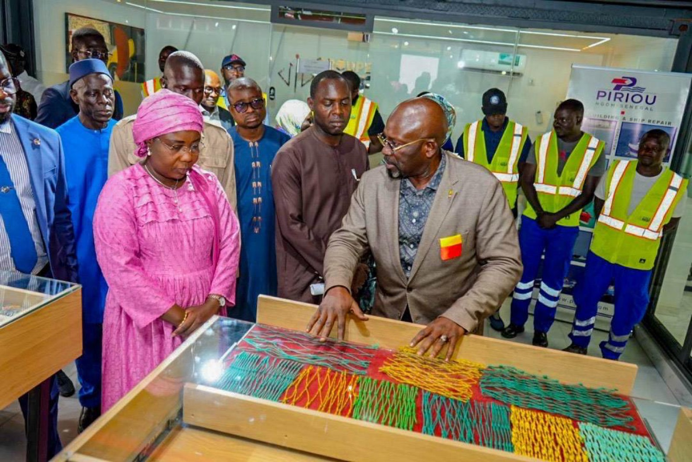
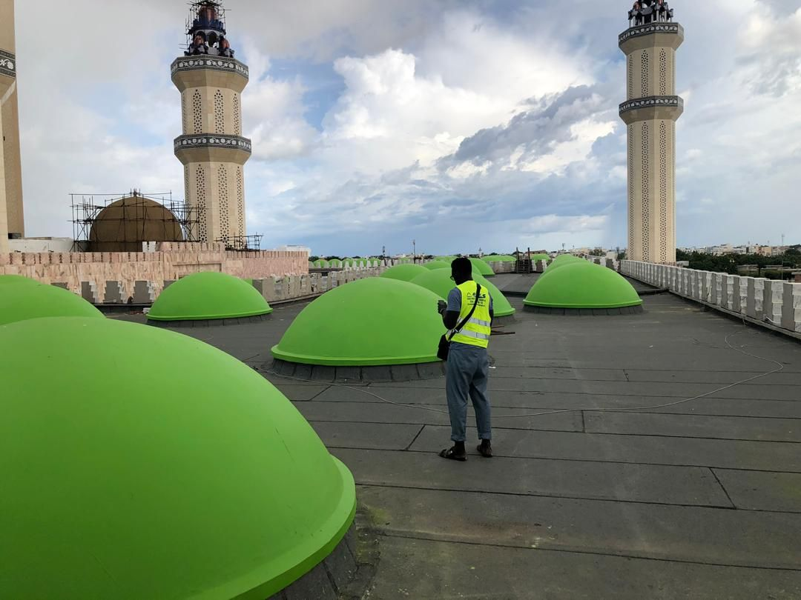

Actualités du Groupe
Inaugurations, événements, portes ouvertes et temps forts : retrouvez la vie du Groupe NGF et de ses partenaires.
Le dernier temps fort

Le Groupe NGF inaugure ses nouveaux locaux au Port de Dakar
Une cérémonie présidée par Dr Fatou Diouf, alors Ministre des Pêches et de l'Économie maritime : coupure du ruban, visite du nouveau showroom et présentation des gammes d'équipement.
Lire l'articleSur le terrain avec nos partenaires
Campagnes de distribution, formations et partenariats du Groupe et de ses marques.

Baptême du patrouilleur CAYOR par le Président Faye
Un navire du groupe Piriou pour la Marine nationale sénégalaise, baptisé le 22 octobre 2024, le savoir-faire naval franco-sénégalais du Groupe.
Voir l'événement
Étanchéité des dômes de la Grande Mosquée de Touba
DEES protège l'un des sites les plus emblématiques du Sénégal : étanchéité des toitures et rénovation des dômes.
Voir le projet
Des moteurs Hidea livrés dans tout le Sénégal
Saint-Louis, Ziguinchor, Podor, Bakel, Tambacounda : NGF équipe la pêche artisanale bien au-delà de Dakar, avec des témoignages d'utilisateurs.
Voir le reportage
Journée portes ouvertes pour maîtriser les produits HAFA
Une session de formation dédiée aux clients pour mieux connaître les produits et services de la marque HAFA, « L'esprit pionnier ».
Voir le reportage